Best Practice
Best Practice
Configurazione di SnapCenter 4.6 mediante un gruppo di risorse
 Suggerisci modifiche
Suggerisci modifiche
SnapCenter 4.6 supporta il rilevamento automatico per i sistemi HANA configurati con la replica del sistema HANA. SnapCenter 4.6 include la logica per identificare gli host HANA primari e secondari durante le operazioni di backup e gestisce anche la gestione della conservazione su entrambi gli host HANA. Inoltre, il ripristino e il ripristino automatici sono ora disponibili anche per gli ambienti di replica del sistema HANA.
Configurazione di SnapCenter 4.6 per gli ambienti di replica del sistema HANA
La figura seguente mostra la configurazione di laboratorio utilizzata per questo capitolo. Due host HANA, hana-3 e hana-4, sono stati configurati con la replica di sistema HANA.
È stato creato un utente di database "SnapCenter" per il database di sistema HANA con i privilegi necessari per eseguire le operazioni di backup e ripristino (vedere "Backup e ripristino SAP HANA con SnapCenter"). È necessario configurare una chiave di memorizzazione utente HANA su entrambi gli host utilizzando l'utente del database indicato sopra.
ss2adm@hana- 3: / > hdbuserstore set SS2KEY hana- 3:33313 SNAPCENTER <password>
ss2adm@hana- 4:/ > hdbuserstore set SS2KEY hana-4:33313 SNAPCENTER <password>
Da un punto di vista di alto livello, è necessario eseguire i seguenti passaggi per configurare la replica del sistema HANA in SnapCenter.
-
Installare il plug-in HANA sull'host primario e secondario. Viene eseguita la rilevazione automatica e viene rilevato lo stato di replica del sistema HANA per ogni host primario o secondario.
-
Eseguire SnapCenter
configure databasee fornire ilhdbuserstorechiave. Vengono eseguite ulteriori operazioni di rilevamento automatico. -
Creare un gruppo di risorse, inclusi entrambi gli host e configurare la protezione.
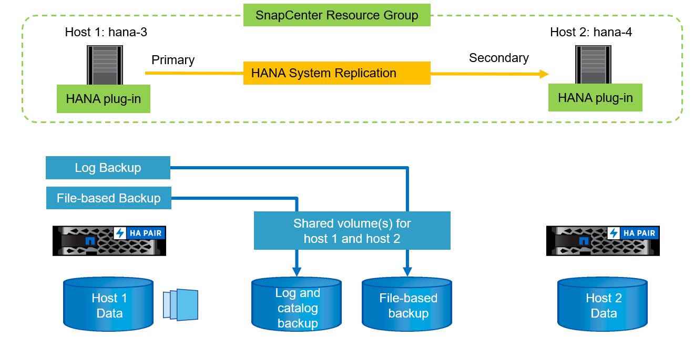
Dopo aver installato il plug-in HANA di SnapCenter su entrambi gli host HANA, i sistemi HANA vengono visualizzati nella vista delle risorse di SnapCenter allo stesso modo delle altre risorse rilevate automaticamente. A partire da SnapCenter 4.6, viene visualizzata una colonna aggiuntiva che mostra lo stato della replica del sistema HANA (attivata/disattivata, primaria/secondaria).
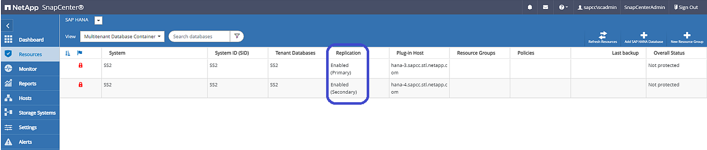
Facendo clic sulla risorsa, SnapCenter richiede la chiave di archivio utente HANA per il sistema HANA.
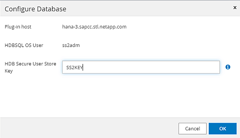
Vengono eseguite ulteriori operazioni di rilevamento automatico e SnapCenter mostra i dettagli delle risorse. In SnapCenter 4.6, lo stato della replica del sistema e il server secondario sono elencati in questa vista.
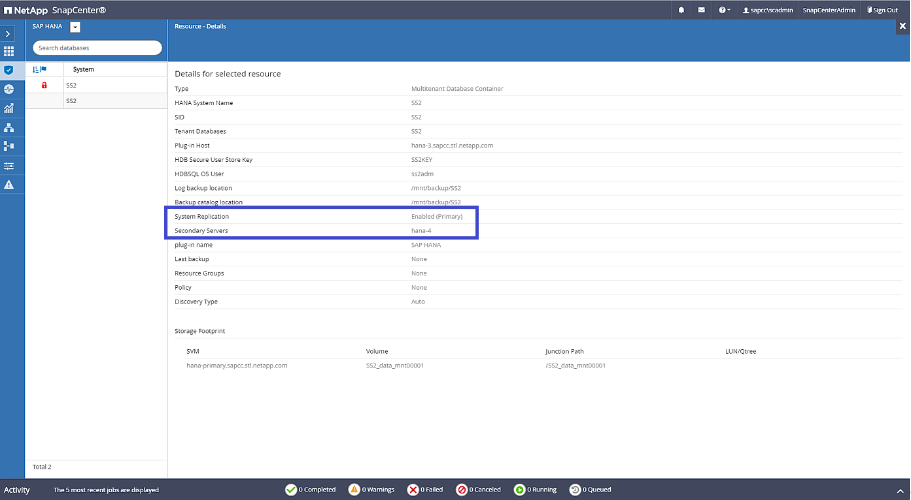
Dopo aver eseguito le stesse operazioni per la seconda risorsa HANA, il processo di individuazione automatica è completo e entrambe le risorse HANA sono configurate in SnapCenter.
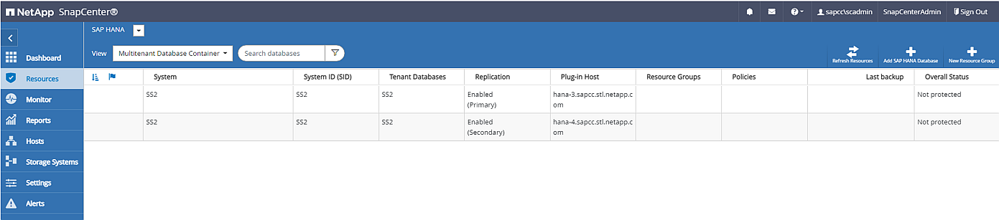
Per i sistemi abilitati alla replica del sistema HANA, è necessario configurare un gruppo di risorse SnapCenter, incluse entrambe le risorse HANA.
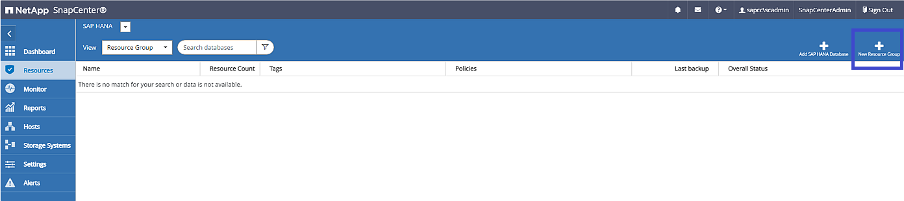
NetApp consiglia di utilizzare un formato nome personalizzato per il nome Snapshot, che deve includere il nome host, la policy e la pianificazione.
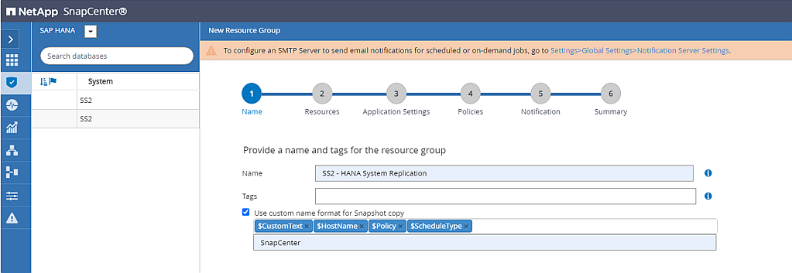
È necessario aggiungere entrambi gli host HANA al gruppo di risorse.
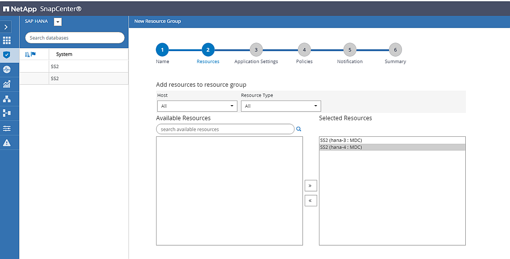
I criteri e le pianificazioni vengono configurati per il gruppo di risorse.

|
La conservazione definita nel criterio viene utilizzata in entrambi gli host HANA. Se, ad esempio, nel criterio viene definita una conservazione di 10, la somma dei backup di entrambi gli host viene utilizzata come criterio per l'eliminazione del backup. SnapCenter elimina il backup meno recente indipendentemente se è stato creato sull'host primario o secondario corrente. |
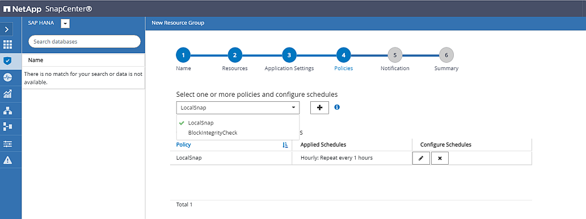
La configurazione del gruppo di risorse è terminata ed è possibile eseguire i backup.
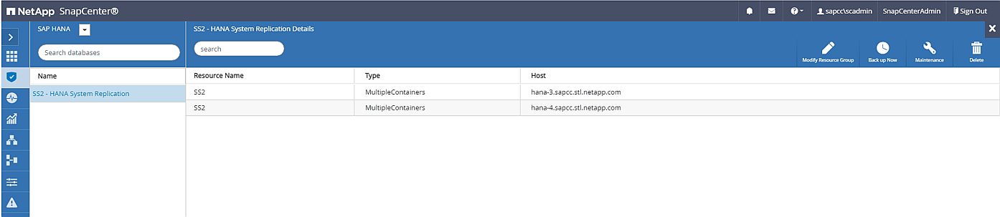
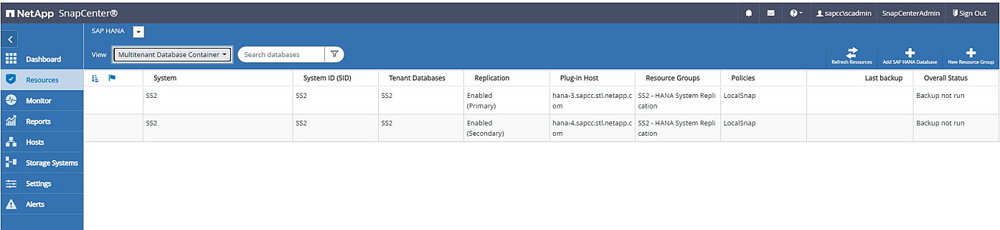
Operazioni di backup di Snapshot
Quando viene eseguita un'operazione di backup del gruppo di risorse, SnapCenter identifica l'host primario e attiva un backup solo sull'host primario. In questo modo, verrà attivato lo snap-shoting solo del volume di dati dell'host primario. Nel nostro esempio, hana-3 è l'host primario corrente e viene eseguito un backup su questo host.
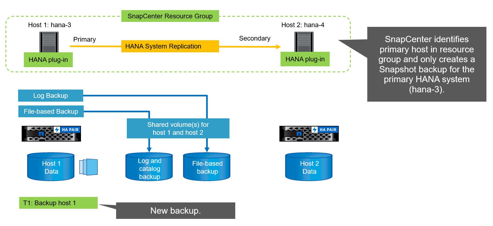
Il log dei lavori di SnapCenter mostra l'operazione di identificazione e l'esecuzione del backup sull'host primario corrente hana-3.
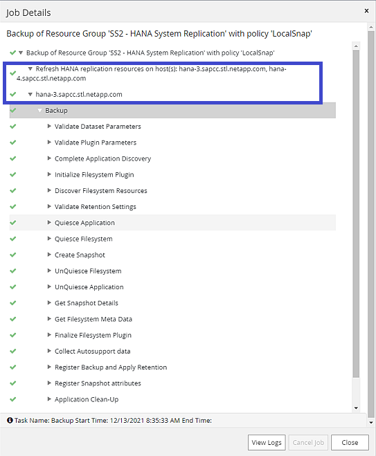
È stato creato un backup Snapshot nella risorsa HANA principale. Il nome host incluso nel nome del backup mostra hana-3.
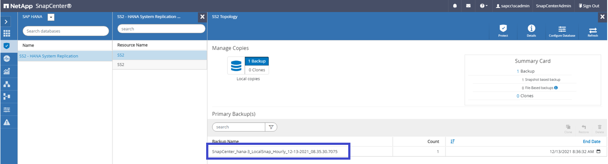
Lo stesso backup Snapshot è anche visibile nel catalogo di backup HANA.
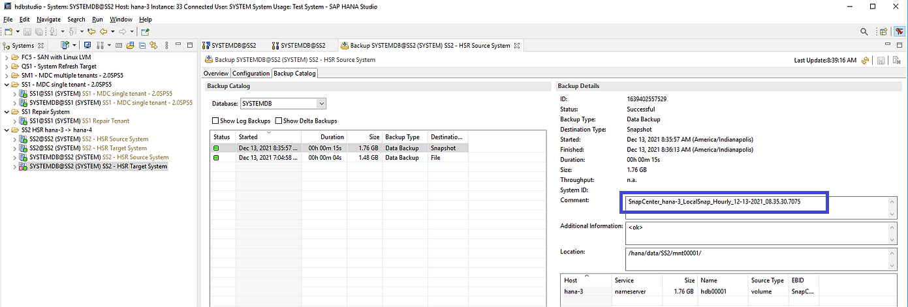
Se viene eseguita un'operazione di Takeover, ulteriori backup SnapCenter identificano ora il precedente host secondario (hana-4) come primario e l'operazione di backup viene eseguita in hana-4. Anche in questo caso, viene attivato solo il volume di dati del nuovo host primario (hana-4).
|
|
La logica di identificazione SnapCenter copre solo gli scenari in cui gli host HANA si trovano in una relazione primaria-secondaria o quando uno degli host HANA è offline. |
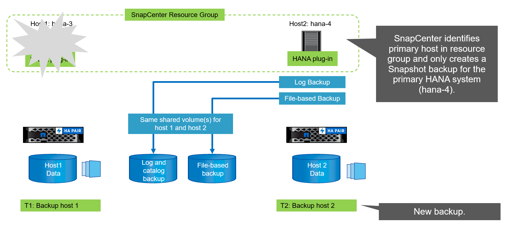
Il log dei lavori di SnapCenter mostra l'operazione di identificazione e l'esecuzione del backup sull'host primario corrente hana-4.
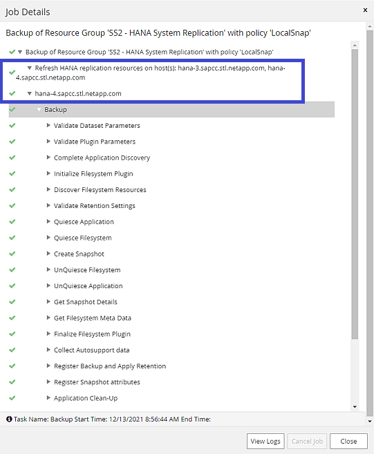
È stato creato un backup Snapshot nella risorsa HANA principale. Il nome host incluso nel nome del backup mostra hana-4.
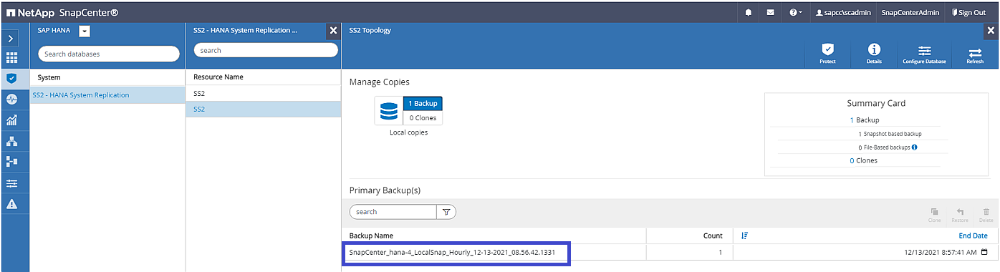
Lo stesso backup Snapshot è anche visibile nel catalogo di backup HANA.
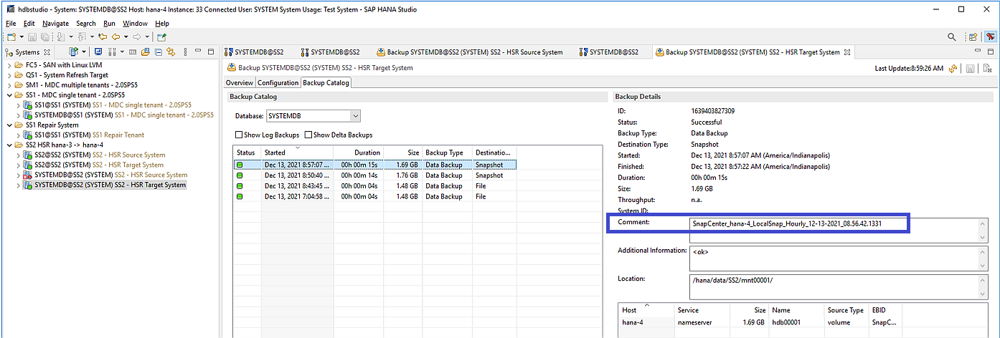
Operazioni di controllo dell'integrità dei blocchi con backup basati su file
SnapCenter 4.6 utilizza la stessa logica descritta per le operazioni di backup Snapshot per le operazioni di controllo dell'integrità dei blocchi con backup basati su file. SnapCenter identifica l'host HANA primario corrente ed esegue il backup basato su file per questo host. La gestione della conservazione viene eseguita anche su entrambi gli host, in modo che il backup più vecchio venga cancellato indipendentemente dall'host attualmente primario.
Replica SnapVault
Per consentire operazioni di backup trasparenti senza l'interazione manuale in caso di Takeover e indipendentemente da quale host HANA sia attualmente l'host primario, è necessario configurare una relazione SnapVault per i volumi di dati di entrambi gli host. SnapCenter esegue un'operazione di aggiornamento del SnapVault per l'host primario corrente ad ogni esecuzione del backup.
|
|
Se un takeover all'host secondario non viene eseguito per molto tempo, il numero di blocchi modificati per il primo aggiornamento SnapVault sull'host secondario sarà elevato. |
Poiché la gestione della conservazione presso la destinazione SnapVault viene gestita da ONTAP al di fuori di SnapCenter, la conservazione non può essere gestita su entrambi gli host HANA. Pertanto, i backup creati prima di un Takeover non vengono cancellati con le operazioni di backup sul precedente secondario. Questi backup rimangono fino a quando il primo primario non diventa nuovamente primario. Affinché questi backup non blocchino la gestione della conservazione dei backup dei log, devono essere eliminati manualmente nella destinazione SnapVault o all'interno del catalogo di backup HANA.
|
|
Non è possibile eseguire la pulizia di tutte le copie Snapshot di SnapVault, poiché una copia Snapshot viene bloccata come punto di sincronizzazione. Se è necessario eliminare anche la copia Snapshot più recente, è necessario eliminare la relazione di replica SnapVault. In questo caso, NetApp consiglia di eliminare i backup nel catalogo di backup HANA per sbloccare la gestione della conservazione dei backup dei log. |
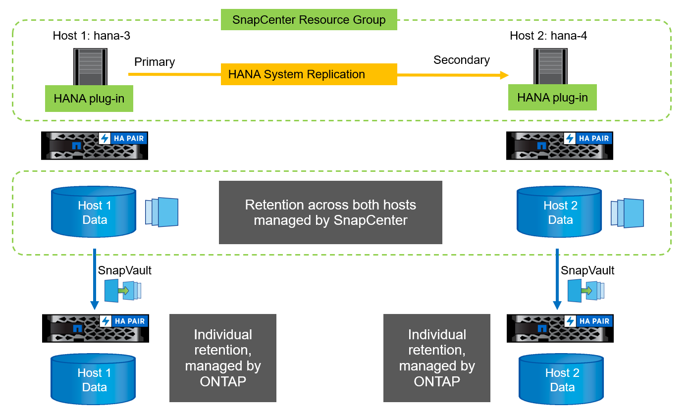
Gestione della conservazione
SnapCenter 4.6 gestisce la conservazione per i backup Snapshot, le operazioni di controllo dell'integrità dei blocchi, le voci del catalogo di backup HANA e i backup dei log (se non disattivati) su entrambi gli host HANA, quindi non importa quale host sia attualmente primario o secondario. I backup (dati e log) e le voci del catalogo HANA vengono cancellati in base alla conservazione definita, indipendentemente dal fatto che sia necessaria un'operazione di eliminazione sull'host primario o secondario corrente. In altre parole, non è richiesta alcuna interazione manuale se viene eseguita un'operazione di Takeover e/o la replica viene configurata nell'altra direzione.
Se la replica di SnapVault fa parte della strategia di protezione dei dati, è necessaria un'interazione manuale per scenari specifici, come descritto nella sezione [SnapVault Replication].
Ripristino e ripristino
La figura seguente mostra uno scenario in cui sono stati eseguiti più takeover e sono stati creati backup Snapshot in entrambi i siti. Con lo stato corrente, l'host hana-3 è l'host primario e l'ultimo backup è T4, creato sull'host hana-3. Se è necessario eseguire un'operazione di ripristino e ripristino, i backup T1 e T4 sono disponibili per il ripristino e il ripristino in SnapCenter. I backup creati sull'host hana-4 (T2, T3) non possono essere ripristinati utilizzando SnapCenter. Questi backup devono essere copiati manualmente nel volume di dati di hana-3 per il ripristino.
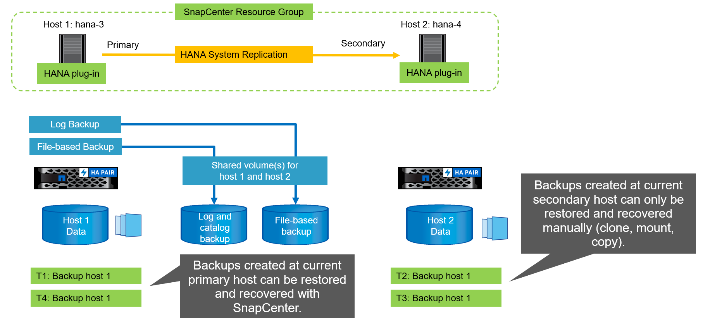
Le operazioni di ripristino e ripristino per una configurazione del gruppo di risorse di SnapCenter 4.6 sono identiche a quelle di una configurazione della replica non di sistema rilevata automaticamente. Sono disponibili tutte le opzioni per il ripristino e il ripristino automatizzato. Per ulteriori dettagli, consultare il report tecnico "TR-4614: Backup e ripristino SAP HANA con SnapCenter".
Nella sezione viene descritta un'operazione di ripristino da un backup creato sull'altro host "Ripristino e ripristino da un backup creato sull'altro host".